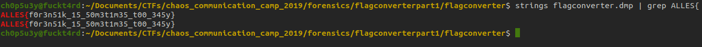
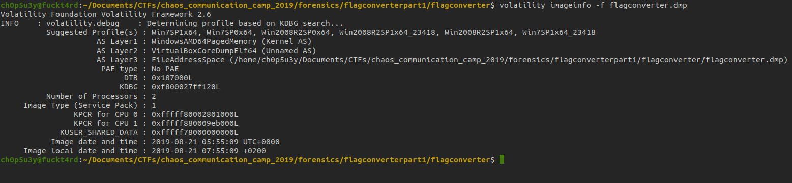
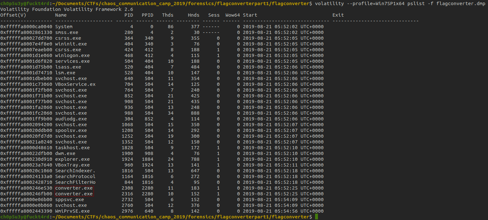
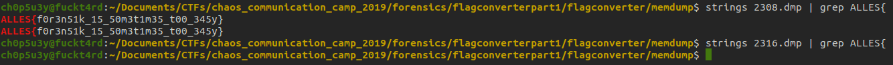

flagconverterpart1 - Chaos Communication Camp 2019
Fri 23 Aug. 2019, 11:00 BST - Sun 25 Aug. 2019, 11:00 BST
Summary: A ridiculously easy to solve forensics challenge, if done the incorrect (or maybe correct?) way.
Starting off, we are presented with a singular dump file (I wasn't able to upload this to Github as it was too large, but if you are in need of the dump file just contact me). The first thing I did was run strings piped into grep to find a flag and well...
I'm genuinely not sure if this is the correct solution or not... (*「･ω･)ﾝ？
Lucky for us I found another more fun yet longwinded way to get the flag. We will be using a memory forensics framework called Volatility. The first command we're going to run on the dump file is imageinfo which will give us a list of potential OS profiles to work with.
We're going to choose the first profile from the list, Win7SP1x64 and if we run into any errors we can try another. Next we're going to use the command pslist to print all the processes that were running when the snapshot was taken.
Immediately the two highlighted exes caught my eye, converter.exe, there's 2 of them and they relate directly to the title of the challenge, flagconverter!
So next we are going to do a dump of memory and inspect these two programs with strings! First we have to use the memdump command.
Now we have the memory dumps of both programs let's use strings to search for our flag!
Again I'm not sure which way was the truly intended solution but I think the second solution is much better overall, as it gives the player a chance to learn how to use Volatility and get some hands on forensics experience.